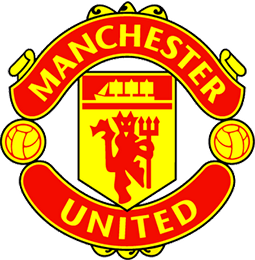

Historia
El Manchester United Football Club es un club de fútbol de la ciudad de Mánchester (Inglaterra) que compite en la liga inglesa Premier League y disputa sus partidos como local en el estadio Old Trafford.Fue fundado en 1878 bajo el nombre de Newton Heath LYR Football Club2 y se incorporó a la First Division en 1892.25 Después de estar cerca de la bancarrota en 1902, J. H. Davies tomó las riendas del club y cambio su nombre por el actual.6 Durante la Segunda Guerra Mundial su estadio fue bombardeado y durante un tiempo estuvieron jugando en Maine Road
|
Escudo

|
Titulo |
Cantidad |
| Uefa Champios League |
2 |
| Premier League |
27 |
| FA CUP |
16 |
| Mundial de clubes |
0 |
| Supercopa de Inglaterra |
20 |
| Supercopa de europa |
1 |
|